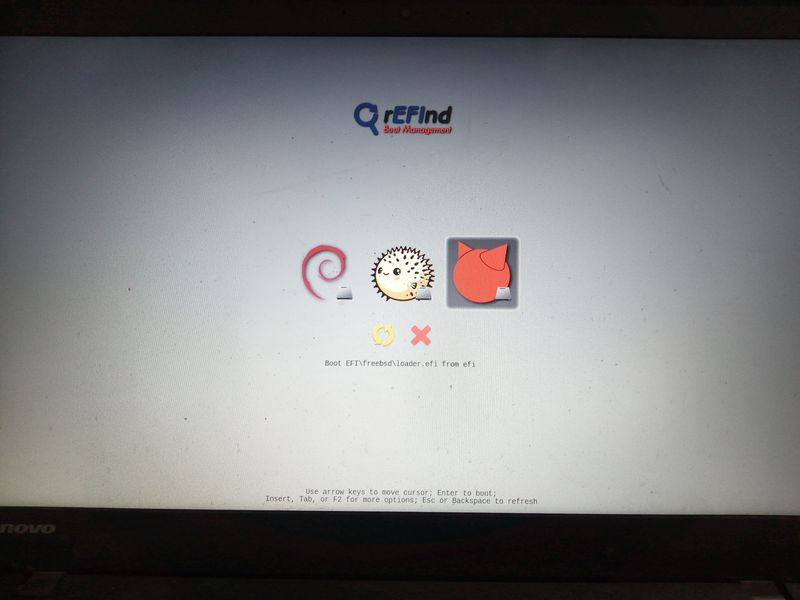

Tengo un sistema multiboot en mi computadora con Debian y OpenBSD y quiero agregar FreeBSD.
Los requerimientos que tengo para la instalación:
- El sistema debe estar encriptado para evitar el acceso a los datos en caso de perdida o hurto del equipo.
- Quiero utilizar ZFS como filesystem, ya que uno de los motivos para instalar FreeBSD es practicar el uso de ZFS así como jails y bhyve.
- La computadora está configurada para bootear utilizando GPT y UEFI.
FreeBSD cumple con todos los puntos anteriores si se elige un sistema de archivos ZFS encriptado con GELI.
El problema comienza al momento de querer instalar FreeBSD, ya que el instalador no posee una opción de instalación multiboot que encripte la partición utilizada por FreeBSD. A continuación puede verse el menú de particionado del instalador de FreeBSD con las opciones disponibles:

Aquí la única opción que podemos utilizar para nuestro caso es la opción
Shell:
Shell opens a shell prompt where advanced users can create customized partitions using command-line utilities like gpart(8), fdisk(8), and bsdlabel(8).
Para usar esta opción debemos conocer cual es el esquema de particiones necesario para la configuración del sistema FreeBSD usando ZFS+GELI.
Aquí realicé dos caminos:
-
Inspeccionar el código fuente que se encuentra en https://cgit.freebsd.org/src/tree/usr.sbin/bsdinstall/scripts/zfsboot?h=releng/14.3.
-
Ejecutar la instalación guiada Root-on-ZFS en una máquina virtual eligiendo:
- un pool de discos de tipo stripe
- encriptación de discos
-
esquema de particiones
GPT (UEFI) - encriptación de swap
Cuando termine la instalación y antes de apagar o reiniciar el equipo presionar
Alt-F4para ir a un shell y allí obtener el log de la instalación que se encuentra en el archivo/tmp/bsdinstall_log.Para extraer los comandos que fueron ejecutados puede utilizarse:
# sed -n '/installation step: zfsboot/,/installation step: mount/p' /tmp/bsdinstall_log > /tmp/steps.txt # sed 's/^DEBUG: //' /tmp/steps.txt | grep -v 'retval=0' | grep -A3 zfs_create > /tmp/commands-zfs_create.txt
De los dos caminos, el segundo fué el que me dió más resultado ya que en el código fuente se tiene que estar reemplazando variables mentalmente mientras que en el log del instalador se tienen los comandos directamente.
Como ejemplo, en el código fuente del instalador se tiene:
if ! echo "$pw_password" | f_eval_catch \
$funcname geli \
"$GELI_PASSWORD_GELIBOOT_INIT" \
AES-XTS $disk$targetpart
then
y en el log la linea correspondiente aparece como:
DEBUG: zfs_create_boot: geli init -bg -e AES-XTS -J - -l 256 -s 4096 "ada0p3"
A continuación la lista de comandos extraidos del archivo /tmp/bsdinstall_log:
zfs_create_boot: Preparing disk partitions for ZFS pool...
zfs_create_boot: With 4K sectors...
zfs_create_boot: sysctl vfs.zfs.min_auto_ashift=12
zfs_create_diskpart: Creating GPT layout...
zfs_create_diskpart: printf "$FSTAB_FMT" "/dev/gpt/efiboot0" "/boot/efi" "msdosfs" "rw" "2" "2" >> "/tmp/bsdinstall_etc/fstab"
zfs_create_diskpart: gpart add -a 1m -l swap0 -t freebsd-swap -s 2147483648b "ada0"
zfs_create_diskpart: gpart add -a 1m -l zfs0 -t freebsd-zfs "ada0"
zfs_create_diskpart: printf "$FSTAB_FMT" "/dev/ada0p2.eli" "none" "swap" "sw" "0" "0" >> "/tmp/bsdinstall_etc/fstab"
zfs_create_boot: geli init -bg -e AES-XTS -J - -l 256 -s 4096 "ada0p3"
zfs_create_boot: geli attach -j - "ada0p3"
zfs_create_boot: Creating root pool...
zfs_create_boot: zpool create -o altroot=/mnt -O compress=lz4 -O atime=off -m none -f "zroot" ada0p3.eli
zfs_create_boot: Creating ZFS datasets...
zfs_create_boot: zfs create -o mountpoint=none "zroot/ROOT"
zfs_create_boot: zfs create -o mountpoint=/ "zroot/ROOT/default"
zfs_create_boot: zfs create -o mountpoint=/home "zroot/home"
zfs_create_boot: zfs create -o mountpoint=/tmp -o exec=on -o setuid=off "zroot/tmp"
zfs_create_boot: zfs create -o mountpoint=/usr -o canmount=off "zroot/usr"
zfs_create_boot: zfs create -o setuid=off "zroot/usr/ports"
zfs_create_boot: zfs create "zroot/usr/src"
zfs_create_boot: zfs create -o mountpoint=/var -o canmount=off "zroot/var"
zfs_create_boot: zfs create -o exec=off -o setuid=off "zroot/var/audit"
zfs_create_boot: zfs create -o exec=off -o setuid=off "zroot/var/crash"
zfs_create_boot: zfs create -o exec=off -o setuid=off "zroot/var/log"
zfs_create_boot: zfs create -o atime=on "zroot/var/mail"
zfs_create_boot: zfs create -o setuid=off "zroot/var/tmp"
zfs_create_boot: Setting mountpoint for root of the pool...
zfs_create_boot: zfs set "mountpoint=/zroot" "zroot"
zfs_create_boot: Modifying directory permissions...
zfs_create_boot: mkdir -p "/mnt/tmp"
zfs_create_boot: chmod 1777 "/mnt/tmp"
zfs_create_boot: mkdir -p "/mnt/var/tmp"
zfs_create_boot: chmod 1777 "/mnt/var/tmp"
zfs_create_boot: Setting bootfs property...
zfs_create_boot: zpool set bootfs="zroot/ROOT/default" "zroot"
zfs_create_boot: Configuring zpool.cache for zroot...
zfs_create_boot: mkdir -p "/mnt/boot/zfs"
zfs_create_boot: zpool set cachefile="/mnt/boot/zfs/zpool.cache" "zroot"
zfs_create_boot: Set canmount=noauto for any datasets under the BE...
zfs_create_boot: zfs set "canmount=noauto" "zroot/ROOT/default"
zfs_create_boot: Configuring rc.conf(5)/loader.conf(5) additions...
zfs_create_boot: echo "zfs_enable=\"YES\"" >> "/tmp/bsdinstall_etc/rc.conf.zfs"
zfs_create_boot: echo "kern.geom.label.disk_ident.enable=\"0\"" >> "/tmp/bsdinstall_boot/loader.conf.zfs"
zfs_create_boot: echo "kern.geom.label.gptid.enable=\"0\"" >> "/tmp/bsdinstall_boot/loader.conf.zfs"
zfs_create_boot: echo "vfs.zfs.min_auto_ashift=12" >> "/tmp/bsdinstall_etc/sysctl.conf.zfs"
zfs_create_boot: Configuring disk encryption...
zfs_create_boot: echo "aesni_load=\"YES\"" >> "/tmp/bsdinstall_boot/loader.conf.aesni"
zfs_create_boot: echo "geom_eli_load=\"YES\"" >> "/tmp/bsdinstall_boot/loader.conf.geli"
Los cuales generan el esquema de particiones siguiente:
root@host:~ # gpart show ada0
=> 40 33554352 ada0 GPT (16G)
40 532480 1 efi (260M)
532520 2008 - free - (1.0M)
534528 4194304 2 freebsd-swap (2.0G)
4728832 28823552 3 freebsd-zfs (14G)
33552384 2008 - free - (1.0M)
root@host:~ # gpart show -l ada0
=> 40 33554352 ada0 GPT (16G)
40 532480 1 efiboot0 (260M)
532520 2008 - free - (1.0M)
534528 4194304 2 swap0 (2.0G)
4728832 28823552 3 zfs0 (14G)
33552384 2008 - free - (1.0M)
Ahora que ya se como el instalador crea las tablas de particiones puedo empezar la instalación en mi equipo.
Comienzo descargando el instalador de FreeBSD y copiandolo a un pendrive (en linux, sdX es la unidad donde fué montado el pendrive):
$ wget 'https://download.freebsd.org/releases/amd64/amd64/ISO-IMAGES/14.3/FreeBSD-14.3-RELEASE-amd64-memstick.img.xz'
$ unxz FreeBSD-14.3-RELEASE-amd64-memstick.img.xz
$ doas dd if=FreeBSD-14.3-RELEASE-amd64-memstick.img of=/dev/sdX bs=1M
En mi caso, debo configurar el laptop para que pueda bootear el instalador desde el pendrive:
Luego se inicia el instalador y entramos al Shell Mode Paritioning.
Aquí inspeccionamos la tabla de particiones existentes:
gpart show ada0
=> 34 3907029101 ada0 GPT (1.8T)
34 2014 - free - (1.0M)
2048 260096 1 efi (127M)
262144 2097152 2 linux-data (1.0G)
2359296 878905344 3 linux-data (419G)
881264640 878905344 4 openbsd-data (419G)
1760169984 878905344 5 ms-basic-data (419G)
2639075328 1267953807 - free - (605G)
gpart show -l ada0
=> 34 3907029101 ada0 GPT (1.8T)
34 2014 - free - (1.0M)
2048 260096 1 efi (127M)
262144 2097152 2 debian-boot (1.0G)
2359296 878905344 3 debian (419G)
881264640 878905344 4 openbsd (419G)
1760169984 878905344 5 data (419G)
2639075328 1267953807 - free - (605G)
A partir de la información anterior se elige crear las particiones:
| index | type | label | size |
|---|---|---|---|
| 6 | freebsd-swap | freebsd-swap0 | 2g |
| 7 | freebsd-zfs | freebsd-zfs0 | 400g |
Para ello se adaptan los comandos vistos más arriba:
- Write GELI password to file (avoid prompt) ①
# vi /tmp/passphrase
- Load kernel modules ②
# kldload zfs
- Preparing disk partitions for ZFS pool...
- With 4K sectors...
# sysctl vfs.zfs.min_auto_ashift=12
- Creating GPT layout...
# echo "# Device Mountpoint FStype Options Dump Pass#" >> /tmp/bsdinstall_etc/fstab ③
# echo "/dev/gpt/efi /boot/efi msdosfs rw 2 2" >> /tmp/bsdinstall_etc/fstab ④
# gpart add -t freebsd-swap -a 1m -s 2g -i 6 -l freebsd-swap0 ada0 ⑤
# gpart add -t freebsd-zfs -a 1m -s 400g -i 7 -l freebsd-zfs0 ada0
# echo "/dev/gpt/freebsd-swap0.eli none swap sw 0 0" >> /tmp/bsdinstall_etc/fstab
# geli init -bg -e AES-XTS -J /tmp/passphrase -l 256 -s 4096 /dev/gpt/freebsd-zfs0 ⑥
# geli attach -j /tmp/passphrase /dev/gpt/freebsd-zfs0
- Creating root pool...
# zpool create -o altroot=/mnt -O compress=lz4 -O atime=off -m none -f zroot /dev/gpt/freebsd-zfs0.eli
- Creating ZFS datasets...
# zfs create -o mountpoint=none "zroot/ROOT"
# zfs create -o mountpoint=/ "zroot/ROOT/default"
# zfs create -o mountpoint=/home "zroot/home"
# zfs create -o mountpoint=/tmp -o exec=on -o setuid=off "zroot/tmp"
# zfs create -o mountpoint=/usr -o canmount=off "zroot/usr"
# zfs create -o setuid=off "zroot/usr/ports"
# zfs create "zroot/usr/src"
# zfs create -o mountpoint=/var -o canmount=off "zroot/var"
# zfs create -o exec=off -o setuid=off "zroot/var/audit"
# zfs create -o exec=off -o setuid=off "zroot/var/crash"
# zfs create -o exec=off -o setuid=off "zroot/var/log"
# zfs create -o atime=on "zroot/var/mail"
# zfs create -o setuid=off "zroot/var/tmp"
# zfs set "mountpoint=/zroot" "zroot"
- Modifying directory permissions...
# mkdir -p "/mnt/tmp"
# chmod 1777 "/mnt/tmp"
# mkdir -p "/mnt/var/tmp"
# chmod 1777 "/mnt/var/tmp"
- Setting bootfs property...
# zpool set bootfs="zroot/ROOT/default" "zroot"
- Configuring zpool.cache for zroot...
# mkdir -p "/mnt/boot/zfs"
# zpool set cachefile="/mnt/boot/zfs/zpool.cache" "zroot"
- Set canmount=noauto for any datasets under the BE...
# zfs set "canmount=noauto" "zroot/ROOT/default"
- Configuring rc.conf(5)/loader.conf(5) additions...
# echo "zfs_enable=\"YES\"" >> "/tmp/bsdinstall_etc/rc.conf.zfs"
# echo "kern.geom.label.disk_ident.enable=\"0\"" >> "/tmp/bsdinstall_boot/loader.conf.zfs"
# echo "kern.geom.label.gptid.enable=\"0\"" >> "/tmp/bsdinstall_boot/loader.conf.zfs"
# echo "vfs.zfs.min_auto_ashift=12" >> "/tmp/bsdinstall_etc/sysctl.conf.zfs"
- Configuring disk encryption...
# echo "aesni_load=\"YES\"" >> "/tmp/bsdinstall_boot/loader.conf.aesni"
# echo "geom_eli_load=\"YES\"" >> "/tmp/bsdinstall_boot/loader.conf.geli"
- Mount EFI partition ⑦
# mkdir -p /mnt/boot/efi
# mount -t msdosfs /dev/gpt/efi /mnt/boot/efi
En ① comenzamos creando el archivo donde guardaremos la password que será utilizada para encriptar la partición ZFS con GELI y así evitar que esta sea pedida en la entrada estandar.
En ② se carga el módulo del kernel zfs, ya que en caso contrario la ejecución
de sysctl da error.
En ③ se agrega el encabezado al archivo /tmp/bsdinstall_etc/fstab que fué
omitido previamente y aparece en la linea:
zfs_create_boot: printf "$FSTAB_FMT" "# Device" "Mountpoint" "FStype" "Options" "Dump" "Pass#" >> "/tmp/bsdinstall_etc/fstab"
Como puede apreciarse en ④ se utiliza un echo en lugar de un printf y a
partir de este punto las particiones se referenciarán utilizando su label (no
se utilizará el número de partición como puede ser ada0p6).
En los comandos gpart ⑤ se elige explicitar el número de partición y se
agregan los tamaños. Vale la pena mencionar que como hay varios sistemas
operativos en el equipo se agrega el prefijo freebsd- para los label generados
por el instalador, de aquí que se tenga freebsd-swap0 y freebsd-zfs0 en
lugar de swap0 y zfs0.
Para la configuración de geli ⑥ en lugar de ingresar el password en la entrada
estandar se utiliza el archivo /tmp/passphrase que fué creado al principio de
la instalación.
Es necesario montar la partición EFI ⑦ en /mnt/boot/efi ya que si bien no
aparece en el log es allí donde el instalador copiará el loader.
Aquí ya podemos escribir exit y continuar con la instalación.
Al terminar la instalación y antes de apagar o reiniciar el equipo se debe
corregir las variables de EFI, ya que el instalardor al crear la entrada para
FreeBSd en las variables EFI del sistema modifica el orden de booteo.
Para ello hay que ir a un shell del instalador (presionando Alt-F4) y ejecutar
efibootmgr -v para conocer el estado de las variables EFI y
efibootmgr -o ... para corregir el orden.
En mi caso, que utilizo rEFInd para elegir el sistema a inciar tengo:
# efibootmgr -v
Boot to FW : false
BootCurrent: 000c
Timeout : 0 seconds
BootOrder : 0013, 0023, 0022, 0021, 000B, 000D, 000A, 0009, 0008, 0007, 000C, 0012
Boot0013* FreeBSD HD(1,GPT,f405b33f-e1b5-46e0-80c1-2ac7f88fafe1,0x800,0x3f800)/File(\EFI\freebsd\loader.efi)
gpt/efi:/EFI/freebsd/loader.efi /mnt/boot/efi//EFI/freebsd/loader.efi
Boot0023* rEFInd HD(1,GPT,f405b33f-e1b5-46e0-80c1-2ac7f88fafe1,0x800,0x3f800)/File(\EFI\refind\refind_x64.efi)
gpt/efi:/EFI/refind/refind_x64.efi /mnt/boot/efi//EFI/refind/refind_x64.efi
Boot0022* openbsd HD(1,GPT,f405b33f-e1b5-46e0-80c1-2ac7f88fafe1,0x800,0x3f800)/File(\EFI\openbsd\bootx64.efi)
gpt/efi:/EFI/openbsd/bootx64.efi /mnt/boot/efi//EFI/openbsd/bootx64.efi
Boot0021* debian HD(1,GPT,f405b33f-e1b5-46e0-80c1-2ac7f88fafe1,0x800,0x3f800)/File(\EFI\debian\shimx64.efi)
gpt/efi:/EFI/debian/shimx64.efi /mnt/boot/efi//EFI/debian/shimx64.efi
Boot000B ATA HDD2 VenMsg(bc7838d2-0f82-4d60-8316-c068ee79d25b,91af625956449f41a7b91f4f892ab0f602)
Boot000D PCI LAN VenMsg(bc7838d2-0f82-4d60-8316-c068ee79d25b,78a84aaf2b2afc4ea79cf5cc8f3d3803)
Boot000A ATA HDD1 VenMsg(bc7838d2-0f82-4d60-8316-c068ee79d25b,91af625956449f41a7b91f4f892ab0f601)
Boot0009 ATA HDD0 VenMsg(bc7838d2-0f82-4d60-8316-c068ee79d25b,91af625956449f41a7b91f4f892ab0f600)
Boot0008* USB FDD VenMsg(bc7838d2-0f82-4d60-8316-c068ee79d25b,6ff015a28830b543a8b8641009461e49)
Boot0007* USB CD VenMsg(bc7838d2-0f82-4d60-8316-c068ee79d25b,86701296aa5a7848b66cd49dd3ba6a55)
+Boot000C* USB HDD VenMsg(bc7838d2-0f82-4d60-8316-c068ee79d25b,33e821aaaf33bc4789bd419f88c50803)
Boot0012* PCI LAN VenMsg(bc7838d2-0f82-4d60-8316-c068ee79d25b,78a84aaf2b2afc4ea79cf5cc8f3d3803)
Unreferenced Variables:
Boot0001 Boot Menu FvFile(126a762d-5758-4fca-8531-201a7f57f850)
Boot0000 Setup FvFile(721c8b66-426c-4e86-8e99-3457c46ab0b9)
Boot0002 Diagnostic Splash Screen FvFile(a7d8d9a6-6ab0-4aeb-ad9d-163e59a7a380)
Boot0011* ATAPI CD VenMsg(bc7838d2-0f82-4d60-8316-c068ee79d25b,aea2090adfde214e8b3a5e471856a354)
Boot0010* ATA HDD VenMsg(bc7838d2-0f82-4d60-8316-c068ee79d25b,91af625956449f41a7b91f4f892ab0f6)
Boot000F* IDER BOOT Floppy PciRoot(0x0)/Pci(0x16,0x2)/Ata(Primary,Master,0x0)
Boot000E* IDER BOOT CDROM PciRoot(0x0)/Pci(0x16,0x2)/Ata(Primary,Slave,0x0)
Boot0006 MEBx Hot Key FvFile(ac6fd56a-3d41-4efd-a1b9-870293811a28)
Boot0005 Rescue and Recovery FvFile(665d3f60-ad3e-4cad-8e26-db46eee9f1b5)
Boot0004 Startup Interrupt Menu FvFile(f46ee6f4-4785-43a3-923d-7f786c3c8479)
Boot0003 Lenovo Diagnostics FvFile(3f7e615b-0d45-4f80-88dc-26b234958560)
Y para que por defecto se ejecute rEFInd debe ajustarse el orden ejecutando:
$ efibootmgr -o 0023,0022,0021,0013,000B,000D,000A,0009,0008,0007,000C,0012
Otro detalle es que junto a /mnt/boot/efi/EFI/freebsd/loader.efi se crea
/mnt/boot/efi/EFI/boot/bootx64.efi como está documentado en la
página del manual de loader.efi:
bsdinstall(8) copies loader.efi to the default name if there wasn’t one there before.
por lo que en mi caso también elimino el default bootloader
(/EFI/boot/bootx64.efi):
rm -r /mnt/boot/efi/EFI/boot
Al fin, se reinicia el equipo y ya se puede elegir FreeBSD:
